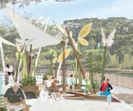
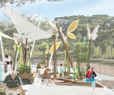

Pasir Ris - Punggol Town Council
Our Heritage
We have been around since the formation of Town Councils and have gone through various past manifestations such as Eunos Town Council, Eunos-Pasir Ris Town Council and Pasir Ris Town Council. Along with the change of electoral boundaries in end 2001, we are officially known as Pasir Ris - Punggol Town Council on 5 January 2002. We manage the HDB estates in the Pasir Ris - Punggol GRC and Punggol West SMC which span across the north-eastern shoreline of Singapore consisting of the modern seaside towns of Pasir Ris and Punggol. With over 80,000 HDB residential households and more new housing developments along the way, we have one of the largest and fastest growing populations in Singapore. To ensure that our town remains one of residents' preferred home choices, we have five Members of Parliament for Pasir Ris - Punggol GRC and one Member of Parliament for Punggol West SMC. Currently, Mr Teo Chee Hean, Senior Minister and Coordinating Minister for National Security, sits on our Council as Advisor. Led by our Chairman, Mr Sharael Taha; with our Vice Chairmen, Dr Janil Puthucheary; Senior Minister of State, Ministry of Health & Ministry of Communications and Information, and Ms Sun Xueling; Minister of State, Ministry of Education & Ministry of Social and Family Development; Elected Members, Mr Desmond Tan; Minister of State, Ministry of Home Affairs & Ministry of Sustainability and the Environment and Ms Yeo Wan Ling. Our Council ensures that the standards of estate maintenance are always kept at the highest level. We also have over 70 dedicated professional full-time staff to look after all the households under Pasir Ris - Punggol Town Council. We value your feedback, and together, we will continually strive to create a gracious living environment for all of us.


 
